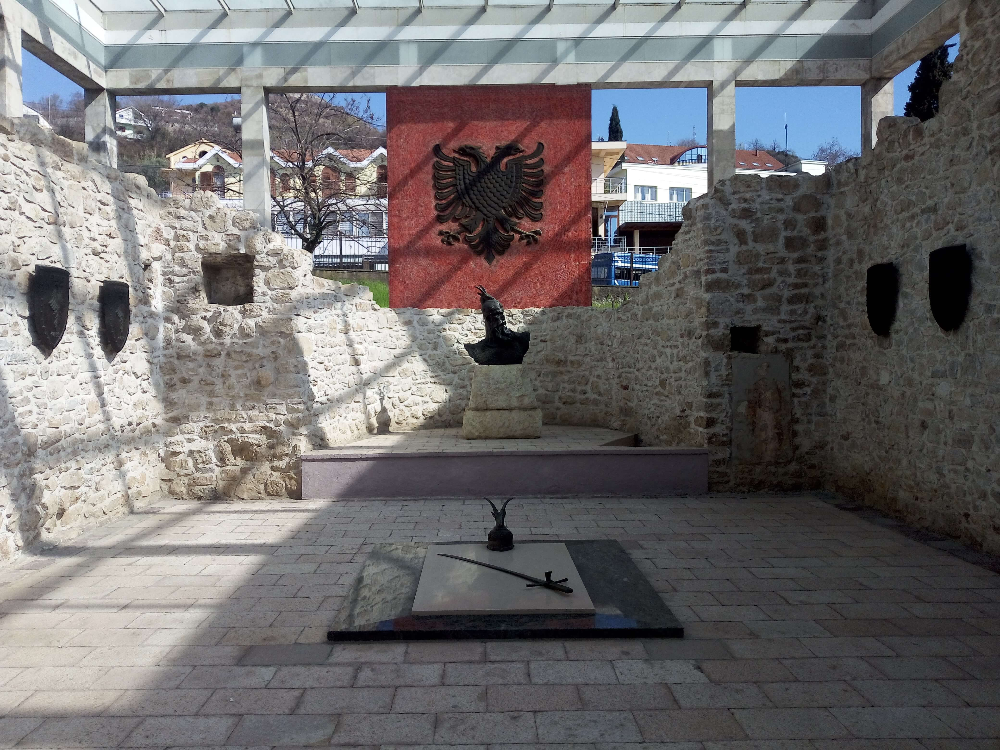

Skanderbeg Memorial
ALBANIA · LEZHË
A Historic Landmark in Albania
Skanderbeg Memorial in Lezhë, Albania, commemorates Gjergj Kastrioti Skanderbeg, the national hero of Albania. The memorial stands at the site associated with the former Cathedral of Saint Nicholas, where Skanderbeg was buried in 1468. Today, the site is an important historical landmark for visitors interested in Albania's history, heritage, and national identity.
My Photo Gallery
Explore my personal travel photos of the Skanderbeg Memorial.
View All Photos ↗